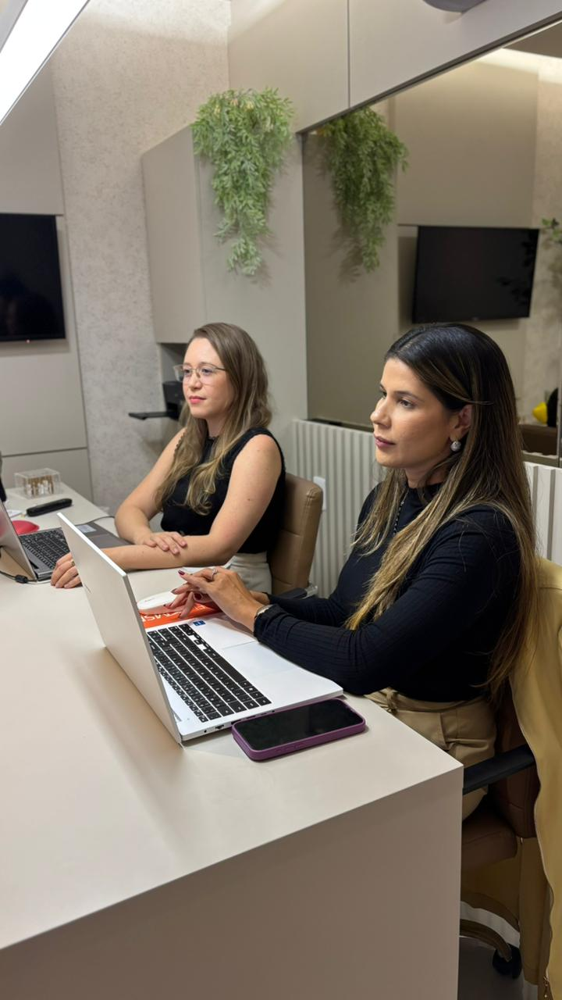
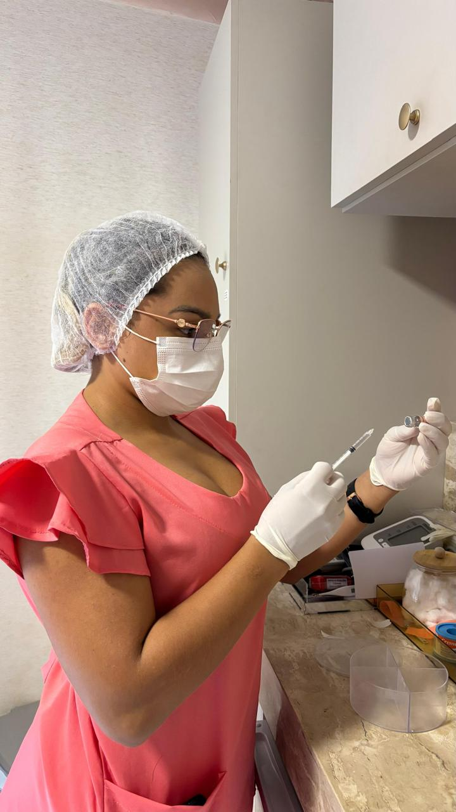
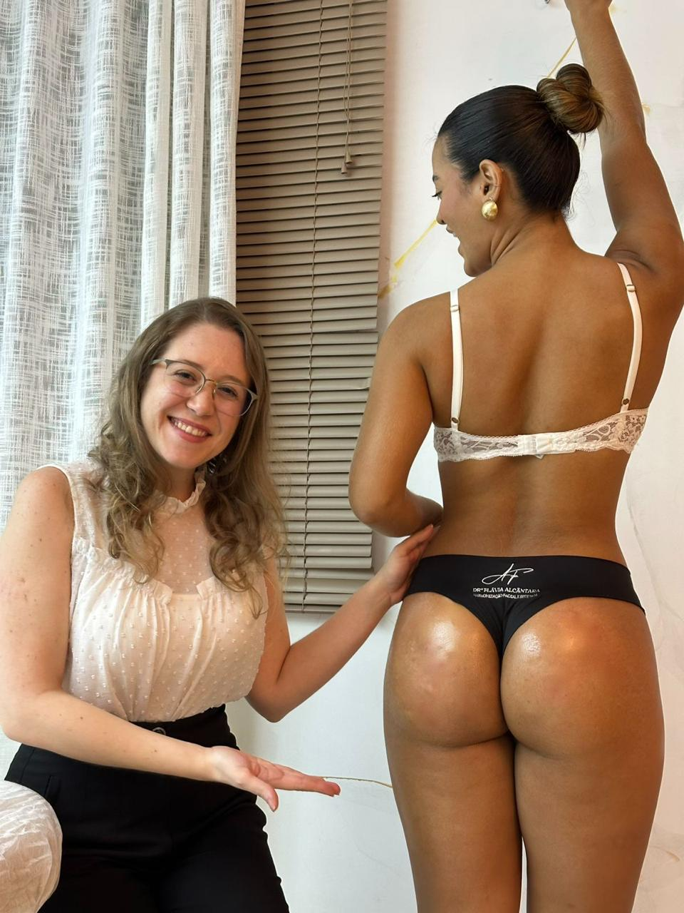
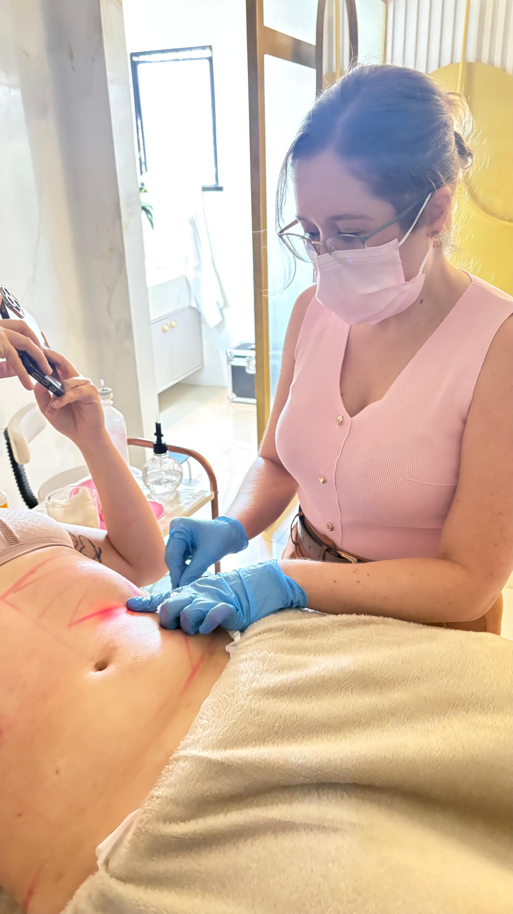
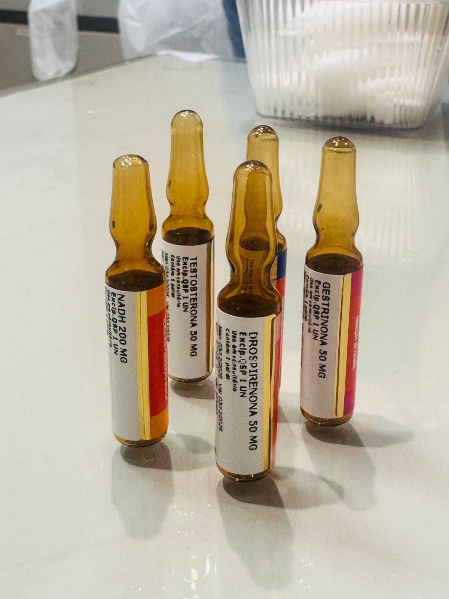
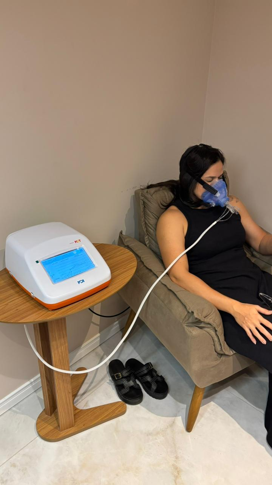
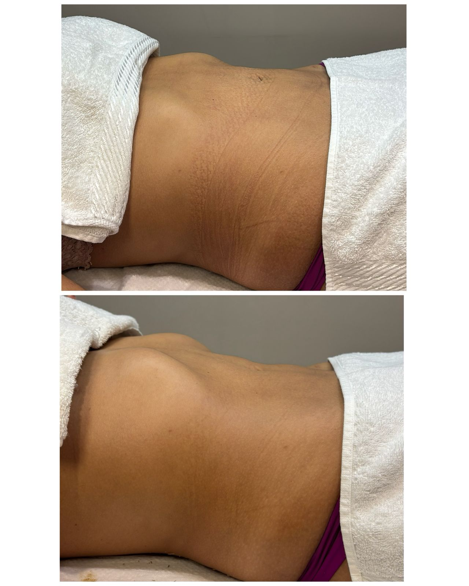
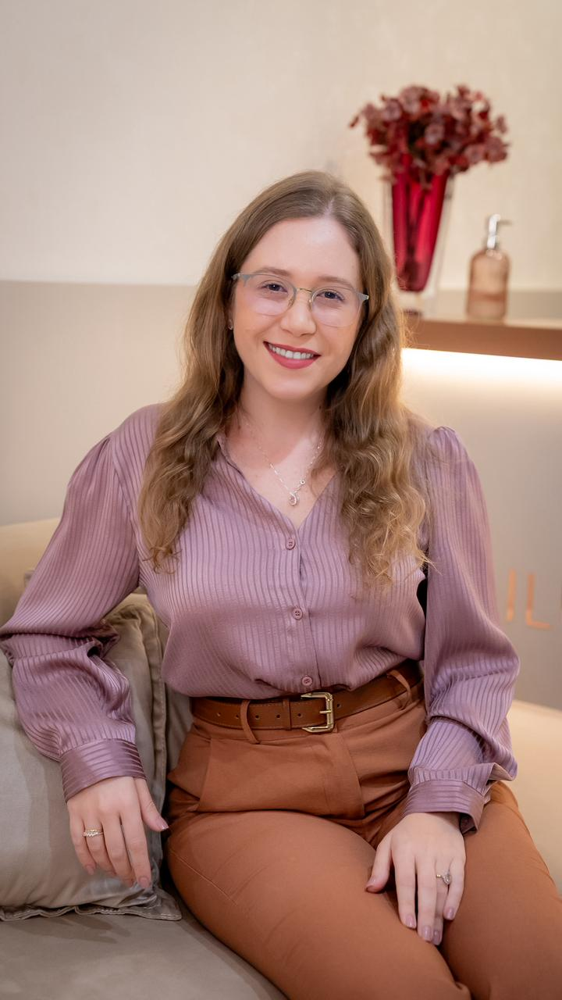
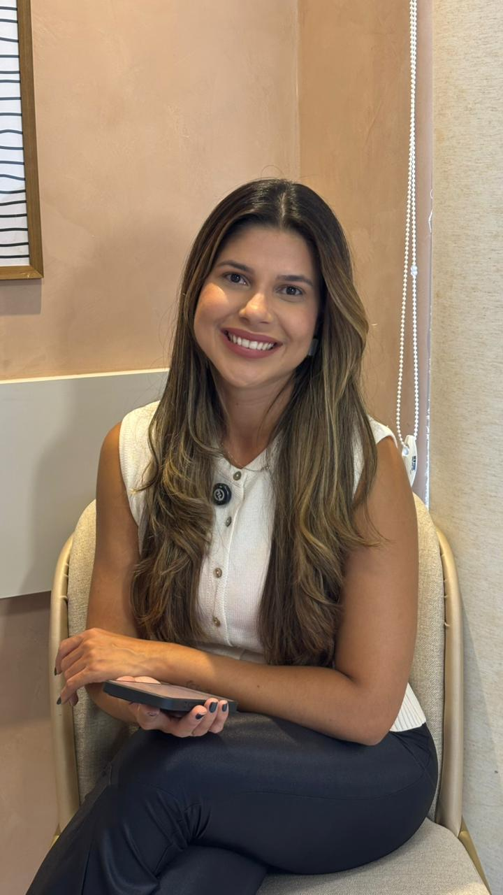

Uma abordagem moderna para saúde, estética e bem-estar.
Agendar ConsultaNosso carro chefe é a consulta compartilhada
Na Ilumivitta Saúde Integrada, a consulta compartilhada é realizada de forma simultânea, com médica e nutricionista atendendo juntas, no mesmo momento.
Essa dinâmica permite uma avaliação ampla e integrada desde o início, unindo olhar clínico, estratégia metabólica e planejamento nutricional em tempo real. As decisões são discutidas ali mesmo, de forma alinhada, garantindo que o protocolo seja coerente, personalizado e direcionado aos objetivos do paciente.
O principal benefício é a otimização do tempo e da experiência: em uma única consulta, o paciente recebe avaliação médica, definição de condutas, ajustes nutricionais e planejamento completo, sem necessidade de agendamentos separados ou orientações fragmentadas.
Os protocolos são construídos de forma integrada, podendo envolver estratégia alimentar, suplementação, manejo metabólico e, quando indicado, terapias específicas. Tudo é pensado de maneira personalizada, com acompanhamento contínuo e ajustes baseados na evolução clínica e na composição corporal.
Mais do que uma consulta dupla, é um atendimento estratégico e coordenado, focado em eficiência, segurança e resultados consistentes.

Equilíbrio essencial
Performance real
Base sólida
Naturalidade
Check-ups e acompanhamento clínico focado em longevidade.
Estratégias personalizadas para recomposição corporal.
Procedimentos de alta tecnologia para face e corpo.

As terapias injetáveis da Ilumivitta Saúde Integrada são protocolos estratégicos utilizados como complemento ao plano clínico e nutricional, sempre com indicação individualizada e baseada em evidência científica.
Podem ser direcionadas para suporte metabólico, melhora de energia, otimização da composição corporal, reposição de nutrientes, fortalecimento imunológico e suporte à performance física. A via injetável permite melhor biodisponibilidade e absorção, especialmente em casos de deficiência nutricional, maior demanda metabólica ou necessidade de resposta mais rápida.
Todos os protocolos são definidos após avaliação médica, respeitando exames laboratoriais, histórico clínico e objetivos do paciente. A aplicação é realizada com segurança, técnica adequada e acompanhamento contínuo, integrando-se ao plano global de tratamento.
O foco não é apenas suplementar, mas potencializar resultados com estratégia, precisão e responsabilidade médica.
Agendar Injetáveis
A harmonização glútea é um procedimento voltado para melhora do contorno, projeção e proporção dos glúteos, com foco em naturalidade e equilíbrio corporal.
Na Ilumivitta Saúde Integrada, o planejamento é individualizado, considerando biotipo, composição corporal, qualidade de pele e expectativa da paciente. O objetivo não é apenas aumentar volume, mas melhorar formato, sustentação e harmonia com o restante do corpo.
O protocolo pode envolver bioestimuladores de colágeno e outras técnicas indicadas conforme avaliação médica, promovendo melhora progressiva da firmeza, textura da pele e definição do contorno. A indicação é criteriosa, priorizando segurança, técnica adequada e acompanhamento pós-procedimento.
A harmonização glútea faz parte de um plano global de cuidado estético e corporal, podendo ser associada a estratégias de recomposição corporal e fortalecimento muscular, sempre com foco em resultados naturais, proporcionais e sustentáveis.
Agendar Harmonização
O Endolaser é um procedimento minimamente invasivo indicado para redução de gordura localizada e melhora da flacidez, promovendo remodelação corporal com estímulo de colágeno.
A técnica utiliza fibra óptica introduzida sob a pele, por onde é emitida energia a laser que atua diretamente nas células de gordura e no tecido subcutâneo. Além de auxiliar na quebra da gordura localizada, o calor controlado estimula a retração da pele, favorecendo maior firmeza e melhor contorno da área tratada.
Na Ilumivitta Saúde Integrada, o planejamento é individualizado, considerando composição corporal, espessura da gordura, qualidade da pele e objetivos do paciente. O procedimento pode ser indicado para regiões como abdômen, flancos, culote, braços e papada, sempre após avaliação médica criteriosa.
Agendar Endolaser
Os implantes hormonais e não hormonais são recursos terapêuticos utilizados de forma estratégica e individualizada, sempre após avaliação clínica criteriosa e análise laboratorial.
Os implantes hormonais podem ser indicados em situações específicas, como manejo de sintomas da menopausa, alterações hormonais diagnosticadas ou condições clínicas que se beneficiem de terapia de reposição, sempre com acompanhamento médico rigoroso, monitorização periódica e indicação baseada em critérios técnicos.
Já os implantes não hormonais são utilizados com foco em performance, suporte metabólico e qualidade de vida, podendo atuar como coadjuvantes em protocolos de emagrecimento, recomposição corporal e melhora de energia, conforme perfil e necessidade do paciente.
Na Ilumivitta Saúde Integrada, a indicação é personalizada e faz parte de um plano global de cuidado, que integra estratégia clínica, nutricional e acompanhamento contínuo. O objetivo é promover equilíbrio, segurança e resultados sustentáveis, respeitando a individualidade biológica de cada paciente.
Agendar Avaliação de Implantes
A calorimetria indireta e a bioimpedância são exames fundamentais para uma avaliação metabólica e corporal precisa, permitindo que o plano terapêutico seja construído com base em dados objetivos.
A calorimetria indireta mede o gasto energético basal real do paciente, identificando quantas calorias o organismo consome em repouso. Isso possibilita prescrever estratégias nutricionais e metabólicas muito mais assertivas, evitando estimativas genéricas e favorecendo resultados mais eficientes no emagrecimento ou na recomposição corporal.
Já a bioimpedância analisa a composição corporal, avaliando percentual de gordura, massa magra, massa muscular, água corporal e outros parâmetros importantes. Esse exame permite acompanhar a evolução de forma detalhada, diferenciando perda de gordura de perda de massa muscular.
Na Ilumivitta Saúde Integrada, ambos os exames são utilizados como ferramentas estratégicas dentro do acompanhamento personalizado, permitindo ajustes precisos no plano alimentar, nos protocolos metabólicos e nos treinos, sempre com foco em saúde, performance e resultados sustentáveis.
Agendar Exames
O serviço de Fisioterapia da Ilumivitta Saúde Integrada é voltado para o cuidado no pós-operatório, reabilitação estética e promoção de recuperação segura e eficiente.
No pós-operatório, as fisioterapeutas atuam com protocolos específicos que incluem drenagem linfática manual, manejo de edema, prevenção e tratamento de fibroses, orientação de mobilidade e acompanhamento da cicatrização. O objetivo é acelerar a recuperação, reduzir desconfortos e potencializar os resultados cirúrgicos com segurança.
Na área estética, são realizados procedimentos como drenagens, terapias para melhora da textura da pele, redução de retenção de líquidos e protocolos complementares para remodelação corporal, sempre integrados ao planejamento médico e nutricional.
O diferencial está na atuação integrada com a equipe da clínica, garantindo que cada paciente receba um acompanhamento personalizado, alinhado ao seu procedimento, fase de recuperação e objetivos estéticos, promovendo resultados mais harmônicos e consistentes.
Agendar Fisioterapia"Atendimento diferenciado e extremamente humanizado. A consulta conjunta com médica e nutricionista faz toda a diferença: conduta alinhada e economia de tempo."
"Ótimo atendimento e profissionalismo de toda a equipe! Desde a recepção até a consulta, todos super atenciosos. Recomendo de olhos fechados!"
"Diferencial na minha vida foi iniciar o tratamento na IlumiVitta. Atendimento perfeito da recepção às Dras. Renara e Vladia. Equipe perfeita!"
"Atendimento excelente. Profissionais altamente preparadas, me senti muito bem e consegui resultados reais."
| Diferencial | IlumiVitta |
|---|---|
| Atendimento integrado | Duo (Médica + Nutri) |
| Planejamento | 100% Personalizado |
| Acompanhamento | Monitoramento Contínuo |
| Foco | Saúde + Estética |
| Metodologia | Baseada em Evidência |
Focado em perda de gordura e manutenção de massa.
Melhora da definição e tônus muscular.
Mais disposição e energia para o dia a dia.
Procedimentos que respeitam sua identidade.
Nossa equipe prepara sua recepção de forma personalizada.
Médica e nutricionista analisam sua saúde em conjunto.
Você recebe um plano completo e acompanhamento contínuo.

Médica especialista em emagrecimento e saúde metabólica
Dra. Vladia Meneses é médica com atuação focada em emagrecimento, performance metabólica, suplementação, hipertrofia e qualidade de vida. Possui pós-graduação em Nutrologia, Medicina do Esporte e em Obesidade e Emagrecimento pelo Hospital Israelita Albert Einstein, além de RQE em Medicina de Família, o que fortalece sua visão clínica ampla, individualizada e centrada no paciente.
É cofundadora da Ilumivitta Saúde Integrada, onde desenvolve protocolos personalizados voltados para recomposição corporal, tratamento da obesidade, melhora da composição corporal e promoção de saúde metabólica, sempre com base em evidência científica, segurança e acompanhamento próximo.
Sua abordagem integra estratégia clínica, mudança de estilo de vida, suplementação e terapias individualizadas, com foco em resultados sustentáveis e melhoria global da saúde. Também atua de forma ativa na educação em saúde, compartilhando conhecimento e orientando pacientes a conquistarem uma transformação consistente e duradoura.

Nutricionista especialista em recomposição corporal
Renara Torquato é nutricionista com atuação focada em emagrecimento, recomposição corporal, performance e mudança de estilo de vida. Desenvolve estratégias nutricionais personalizadas, respeitando a individualidade, a rotina e os objetivos de cada paciente, com foco em resultados consistentes e sustentáveis.
É cofundadora da Ilumivitta Saúde Integrada, onde atua de forma integrada à equipe médica, contribuindo para protocolos voltados ao tratamento da obesidade, ganho de massa muscular, melhora da composição corporal e saúde metabólica.
Também é especialista em acompanhamento nutricional no pré e pós-operatório, oferecendo suporte estratégico para otimizar cicatrização, preservar massa magra, reduzir complicações e potencializar resultados cirúrgicos. Seu trabalho une ciência, escuta ativa e acompanhamento próximo, entendendo a nutrição como ferramenta de transformação, autonomia e construção de um estilo de vida equilibrado e duradouro.
Identificamos os perfis que mais se beneficiam da nossa estratégia integrada.
"Queria emagrecer sem radicalismo e finalmente encontrei acompanhamento completo."
"Me senti mais segura e confiante com resultados naturais."
"Foi a primeira vez que tive um plano realmente personalizado."
"Não queria apenas estética. Queria cuidar da saúde como um todo."
A médica e a nutricionista atendem juntas, permitindo uma avaliação integrada e estratégica desde o início, discutindo seu caso em tempo real.
Sim. Todo planejamento é individualizado conforme exames, objetivos, rotina e necessidades específicas de cada paciente.
Sim. O pilar fundamental da IlumiVitta é o equilíbrio e a naturalidade, realçando sua própria beleza sem exageros.
Não necessariamente. Caso necessário, os exames complementares serão solicitados durante a sua primeira avaliação integrada.
O tempo pode variar, mas geralmente reservamos um tempo generoso para uma avaliação minuciosa e estratégica, superando as consultas convencionais em profundidade.